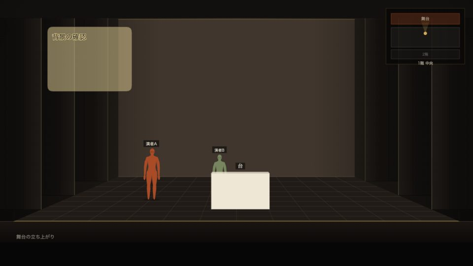
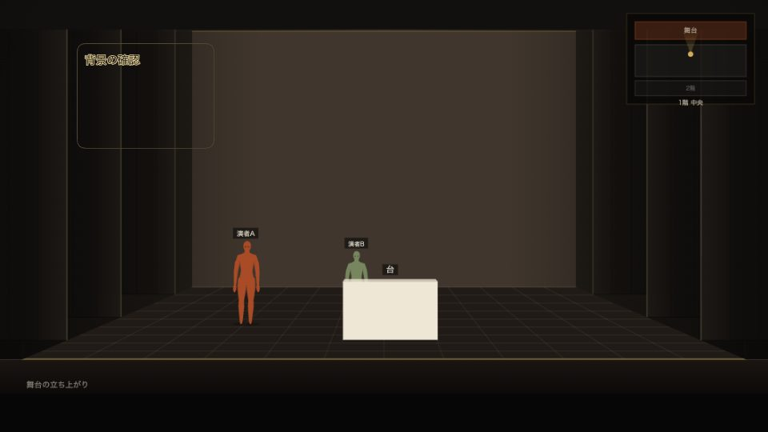
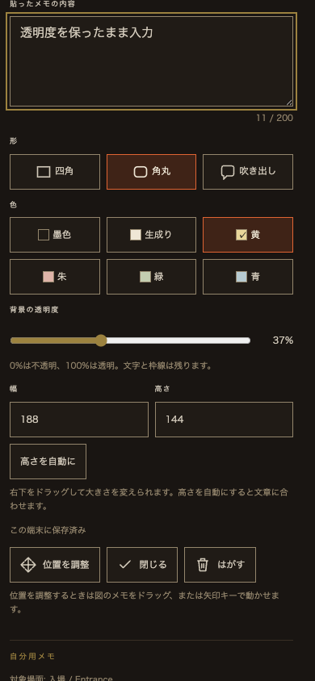

メモの背景透明度を変える
2026年9月10日・本家とベータが共用するStage Sketch Viewerへローカル実装済み。メモを選び、色の下にある「背景の透明度」を動かします。0%は不透明、100%は透明。1%刻みで背景だけを調整し、文字・枠線は残ります。
元のViewerで確認する。保存済み「テスト」を選び、設定欄を開いています。今回、そのメモの内容・形・色・寸法・透明度は変更していません。
見え方と操作
背景を透かすと文字の周りに元の紙色の細い縁取りが付き、舞台図の上でも文字を区別しやすくします。図上でダブルクリックして入力している間だけ、編集欄は不透明です。完了すると指定した透明度へ戻ります。正面図と平面図で、それぞれのメモに別の透明度を保存できます。
背景透明度50%の共有画像

背景透明度100%の共有画像

スマートフォン幅の設定欄

保存・認可
既存の個人ノートの各付箋へ、任意のbackgroundOpacityを追加。有限数0〜1だけをクライアント・サーバーで許可し、未指定の旧メモは1（不透明）です。匿名ベータはこのブラウザ内、既存アカウント方式は本人用ノートへ保存します。公開版更新での履歴と、選択したメモのコピーにも保持します。所有者の公開ショーJSONや認可境界は変更していません。共有ボタンを押したときだけ、指定透明度を反映した画像がオーナーへ送られます。
実行した検証
- 対象Nodeテスト61 / 61成功。旧メモ互換、0・1の境界、不正な型・範囲外・非有限数の拒否、履歴と選択コピーでの保持を確認。
- 実Worker・SQLite検証19 / 19成功。個人ノートと履歴の透明度を再起動後も保持し、不正な透明度をAPIが拒否。別の演者やオーナーは個人ノートを閲覧できません。
- Chrome操作検証4グループ成功、pageerror 0。0・50・100%の背景、文字の不透明維持、1%刻み、再読み込み、ダブルクリック入力、正面図・平面図で独立した設定を確認。3回の明示共有以外の投稿は0回。
- 共有JPEGの画素を比較し、50%の色が不透明と透明の中間値になることを検証。舞台の公開文書が不変であることも比較。
- 日英 × 幅1440・768・390・844pxの8条件で、ラベル・割合・44px以上の操作領域・横はみ出しなしを確認。実際の8802タブでも新しいスライダーと旧メモの0%を確認。
- 全Nodeテスト890 / 892成功。今回編集していないstage-session-polishのゲストガード正規表現、stage-venue-libraryの版101期待値の2件が失敗。
- 変更JSと検証ツールの構文、build_stage.py --check、build_study.py --check、git diff --check成功。公開ビルド検査は別作業のtry.html・本家描画・翻訳・CSSの生成物未更新を検出。これらを上書きしていません。
ブラウザ結果・画素値 · 対象Node · Worker / SQLite · 全Node · 公開ビルド · デザイントークン
変更ファイル
stage-study-sticky.js、stage-study-private.js、study-reader-account.js、stage-study-viewer.js、stage-study.css、study.html、build_study.pyと生成されるstudy-frame.html、tests/study-sticky.test.mjs、tools/study-reader-runtime-check.mjs、design/TOKEN_SHEET_study-links_2026-09-09.md。追加：tools/study-sticky-opacity-browser-check.mjs、この記録、sticky-opacity-qa/。
未確認・本番適用
iPhone・iPad Safari実機でのスライダー操作・入力時の表示は未確認です。次は実機で舞台図を透かしたときの文字の見やすさを確認できます。アカウント同期を使う本番では、透明度を保持するためWorkerとクライアントを揃えて更新してください。新しいCloudflare設定・DO・migrationは不要です。既存の事前学習機能の設定は維持します。
ローカル8802は同じSQLite保存先で再起動し、元の公開版・ショー内容のハッシュ一致を確認済み。commit・push・デプロイ・公開・外部送信・秘密情報登録は行っていません。着手時の差分を記録し、既存の無関係な未コミット変更は保持しています。